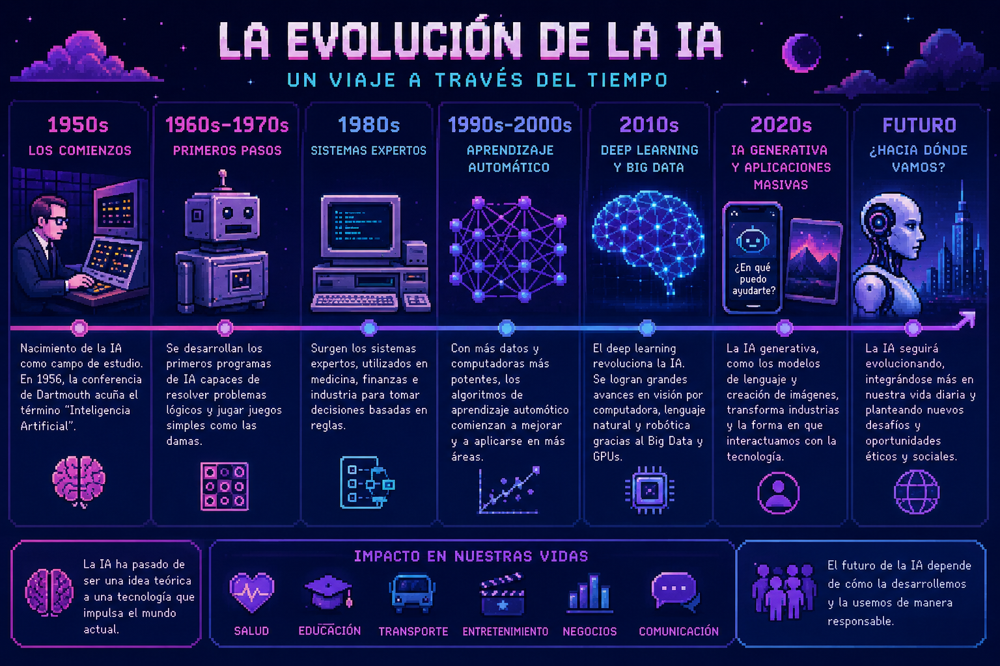

Indice
-
La Consolidación de una Disciplina (1950 - 1956)
-
La Era de los Algoritmos y el Primer "Invierno" (1960 - 1980)
-
El Renacimiento Silencioso y los Sistemas Expertos (1980 - 1995)
-
El Renacimiento del Siglo XXI y el Aprendizaje Profundo
-
La Era de la IA Generativa
-
La Revolución de la Multimodalidad (2021 - Presente)
-
El Próximo Horizonte: La IA Agéntica y el Razonamiento

Sin embargo, este anhelo permaneció en el terreno de la fantasía y la filosofía hasta mediados del siglo XX.
La Consolidación de una Disciplina (1950 - 1956)
proponiendo su famoso test como medida de inteligencia. Pero fue en 1956, durante la histórica Conferencia de Dartmouth, cuando la disciplina recibió formalmente su nombre.
Figuras como John McCarthy, Marvin Minsky, Nathaniel Rochester y Claude Shannon sentaron las bases teóricas, definiendo la Inteligencia Artificial (IA) como el intento de simular
cada aspecto del aprendizaje o cualquier otra característica de la inteligencia.

La Era de los Algoritmos y el Primer "Invierno" (1960 - 1980)
Durante
las décadas de 1960 y 1970, el entusiasmo inicial dio lugar al
desarrollo de los primeros sistemas basados en reglas y lógica
simbólica. Surgieron hitos como ELIZA,
el primer chatbot, y sistemas expertos diseñados para resolver
problemas específicos en medicina o geología. No obstante, los
investigadores pronto chocaron con la "barrera de la complejidad":
Capacidad de hardware: Los procesadores de la época eran incapaces de manejar cálculos masivos.
Limitación de datos: La información necesaria para alimentar estos sistemas era escasa y difícil de digitalizar.
Esta brecha entre las expectativas y los resultados reales condujo a
periodos de desilusión y recortes de financiación conocidos como los "Inviernos de la IA".
El Renacimiento Silencioso y los Sistemas Expertos (1980 - 1995)
Antes de que llegáramos al Deep Learning masivo, la IA tuvo un segundo aire impulsado por el sector corporativo. En lugar de intentar imitar la inteligencia general humana, los investigadores se centraron en el conocimiento especializado.
Sistemas Expertos: Se crearon programas que imitaban la toma de decisiones de un experto humano (como un médico o un ingeniero) mediante miles de reglas "si-entonces". Fue el primer gran éxito comercial de la IA.
El Regreso de las Redes Neuronales: Mientras el mundo se enfocaba en reglas lógicas, en las sombras, figuras como Geoffrey Hinton trabajaban en el algoritmo de retropropagación (backpropagation). Este avance permitió que las redes neuronales empezaran a aprender de sus errores de forma mucho más eficiente, aunque todavía faltaba la potencia de cálculo para demostrar su verdadero potencial.
El Renacimiento del Siglo XXI y el Aprendizaje Profundo
A partir del año 2000, el paradigma cambió radicalmente. La IA abandonó la programación rígida de reglas para abrazar el Machine Learning (Aprendizaje Automático),
donde la máquina aprende patrones a partir de la experiencia. El verdadero salto cuantitativo llegó con el Deep Learning (Aprendizaje Profundo), inspirado en la estructura de las redes neuronales biológicas.
-Este resurgimiento fue impulsado por una "tormenta perfecta" de tres factores:
-Big Data: La explosión de internet proporcionó un océano de datos para el entrenamiento.
-Poder Computacional: El uso de GPUs (unidades de procesamiento gráfico) permitió realizar billones de operaciones por segundo.
-Innovación Arquitectónica: El desarrollo de las redes de "transformadores" en 2017 revolucionó la forma en que las máquinas comprenden el contexto.
La Era de la IA Generativa
En la actualidad, hemos pasado de sistemas que simplemente clasifican datos a sistemas que crean. Modelos de lenguaje a gran escala, como GPT-3 y sus sucesores,
han demostrado hitos asombrosos en el procesamiento de lenguaje natrual (NLP). Gracias al aprendizaje few-shot —la capacidad de realizar tareas nuevas con mínimos ejemplos—,
estas herramientas no solo
generan texto coherente y código de programación, sino que actúan como
colaboradores creativos, marcando el inicio de una era donde la
frontera entre la herramienta y
el agente inteligente es cada vez más difusa.
La Revolución de la Multimodalidad (2021 - Presente)
Si el hito de 2017 fueron los Transformadores aplicados al texto, el gran salto actual es la capacidad de la IA para "cruzar" sentidos. Ya no estamos limitados a procesar píxeles por un lado y palabras por otro.
Espacios Latentes Compartidos: Modelos como CLIP (de OpenAI) permitieron que las máquinas entendieran que la palabra "perro" y la imagen de un Golden Retriever son lo mismo en un nivel matemático abstracto. Esto dio origen a herramientas como DALL-E, Midjourney y Stable Diffusion.
-
De la Generación de Texto a la Generación de Mundo: Hemos pasado de modelos que predicen la siguiente palabra a modelos que generan video coherente (como Sora) y audio hiperrealista, permitiendo una interacción natural donde la IA puede "ver" a través de una cámara y responder con voz emocional en tiempo real.
El Próximo Horizonte: La IA Agéntica y el Razonamiento
Estamos cruzando la frontera de la "IA que responde" a la "IA que ejecuta". Este es el capítulo que se está escribiendo mientras lees esto.
Agentes Autónomos: A diferencia de un chatbot pasivo, los agentes están diseñados para cumplir objetivos complejos (ej. "Planifica mi viaje, reserva los vuelos y optimiza mi presupuesto"). La IA ya no solo genera contenido, sino que utiliza herramientas, navega por la web y maneja software de terceros.
Modelos de Razonamiento (System 2): Se están desarrollando técnicas para que los modelos "piensen antes de hablar". En lugar de soltar la respuesta más probable estadísticamente, el modelo utiliza procesos de verificación interna y cadenas de pensamiento para resolver problemas lógicos y matemáticos donde el "instinto" digital no es suficiente.